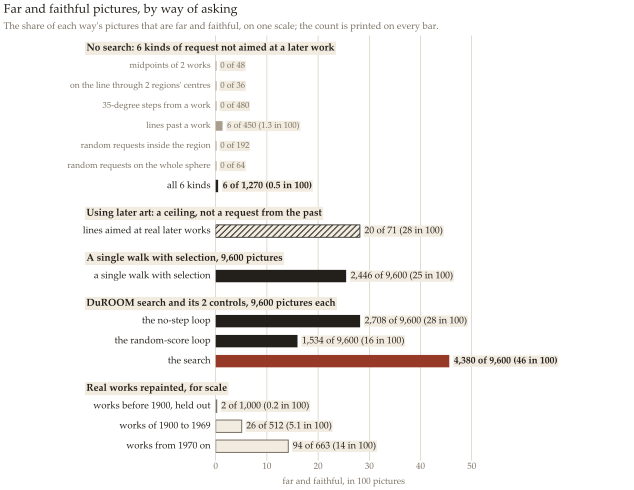

Results overview
We asked whether we can find undiscovered artifacts when all we have is the archive of what was made (Introduction). We froze the archive at 1900, searched from 5 works painted before it, and checked what we found against the art that came after. The answer is yes.
What we found (Q11)
- 4,380 of the 9,600 pictures DuROOM search painted are far from the works before 1900 and faithful, i.e., still pictures of what we asked for.
- On the manifold: 4,049 of them have a real work within the manifold line, i.e., a pair of distances, one per observer (DINOv3 and SigLIP), set so that 99% of 2,048 repainted real works have their nearest real work within it in at least one observer. For 3,850 it is a work dated 1900 or later, with none dated before 1900: art went there only after 1900 (Figure 1, Figure 2).1
- Off the manifold: 331 have no real work of any date within the manifold line. Their nearest real work sits at a median distance of 0.88 in DINOv3, where the line is 0.76.
- 1,314 of the 3,850 are also badly described by the art before 1900, i.e., have a large leftover share.
- From 5 different works the search arrives at the same later works. 104 real later works are reached from 3 or more of the 5 starts, and 32 from all 5. The 104 hold 3,089 of the 3,850 pictures. Off the manifold the starts do not meet.
- The search’s pictures lean the way the century went as much as real works of 1900 to 1969 do, +0.25 against +0.20. Its controls’ pictures lean as much, +0.22 and +0.19.

![Two panels of 4 strips, one per loop and one for the single walk, each split into 4 parts: a work dated before 1900 within the manifold line; none dated before 1900 within the manifold line and a work dated 1900 or later within the manifold line; only an undated work within the manifold line; no real work within the manifold line. All far and faithful pictures: the search, 4,380: 180, 3,850, 19 and 331; the random-score loop, 1,534: 66, 1,247, 34 and 187; the no-step loop, 2,708: 834, 1,714, 53 and 107; the single walk, 2,446: 60, 2,065, 44 and 277. Those with a large leftover share: the search, 1,538: 11, 1,314, 8 and 205; the random-score loop, 87: 0, 69, 2 and 16; the no-step loop, 36: 2, 13, 11 and 10; the single walk, 541: 412 in the second part and 129 left unsplit.](figures/dated_split_v3.svg)
What the search adds (Q12)
- With no search, 6 of 1,270 pictures painted from simple requests are far and faithful (Q9). The free search, i.e., the search left to the score alone, with each picture’s fidelity only recorded (Q10), paints 0 in 5,760.
- DuROOM search has 120 hits, i.e., distinct admitted pictures that are far and faithful and covered by later works (Q12 says how), against 65 for the random-score loop, the same loop told random scores, and 40 for the no-step loop, with no step and random scores. It has more at each of the 5 starts.
- Of all pictures painted, 4,380 are far and faithful, against 1,534 and 2,708 for the 2 controls (Figure 3). 1,314 also have a large leftover share, with a work dated 1900 or later within the manifold line and none dated before, against 69 and 13.
- Off the manifold the search has 331, against 187 and 107, more in total, though not at every start.
- Restarted each round from its 1 best feasible picture in place of 4, the search has 283 hits, against 120 (Q10). It also has 1,004 far and faithful pictures off the manifold, against 331.
- Under a bar per region in place of one bar, the search still paints more far and faithful pictures than either control (Q12).

What this does not show (Discussion)
- The decoder has seen art from after 1900. Of the 32 far and faithful pictures it paints from noise, 31 also have a work dated 1900 or later within the manifold line and none dated before.
- We also ran the 3 loops from 5 other starts, scored against today’s reference, 2,048 repainted works of every date, in place of the works before 1900. Of the search’s 9,600 pictures there, faithful or not, 1,716 are off the manifold, against 57 and 135 for its controls. We looked for a place off the manifold where pictures from 3 or more starts meet. There is none, for any loop. The same test finds none among real works from 1970 on either, so it cannot say whether such a place exists.
Next, Q11 shows what we found in full.
Footnotes
This reads dated works only. 3,519 of the 3,850 also have an undated work within the manifold line.↩︎